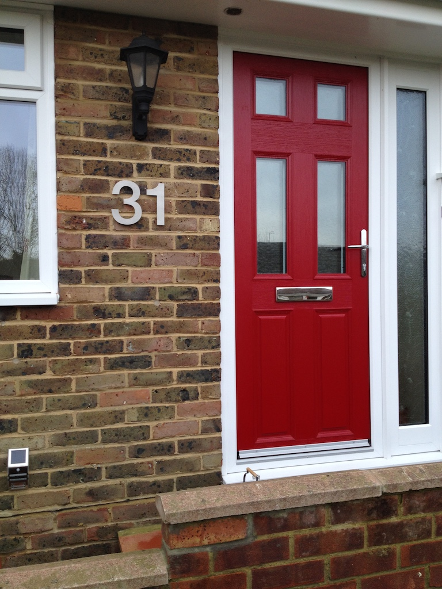

House Number - Again
We bought our little house a Christmas present; some new, large numbers. So today, Boxing Day, I fixed them to the wall by the front door. Hopefully people will be able to see them easily from the pavement and won't need to find the small numbers on the garage.
I had to drill two holes in the bricks for the number one and three holes for the number three. The numbers each came with a template that I taped to the wall to show where the holes had to be made. Drilling the holes was quite difficult, since the bricks are very bumpy and the drill bit (the thing that makes the hole is called a bit) kept sliding away from where I had to drill the hole. Grandma always says that I don't fix things to walls properly. They are either not vertical or not horizontal. Hopefully the numbers are right.
Once I'd drilled the hole I pushed a plastic plug into each and then screwed a plastic cup in each place. Knobs on the back of the numbers (three on the number three and two on the number one) then pushed into the cups, holding the number on the wall, but standing away from the wall by about ten millimeters.
Do you like our new house numbers?